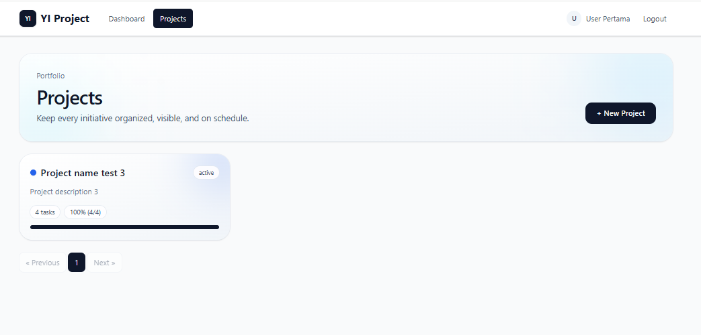
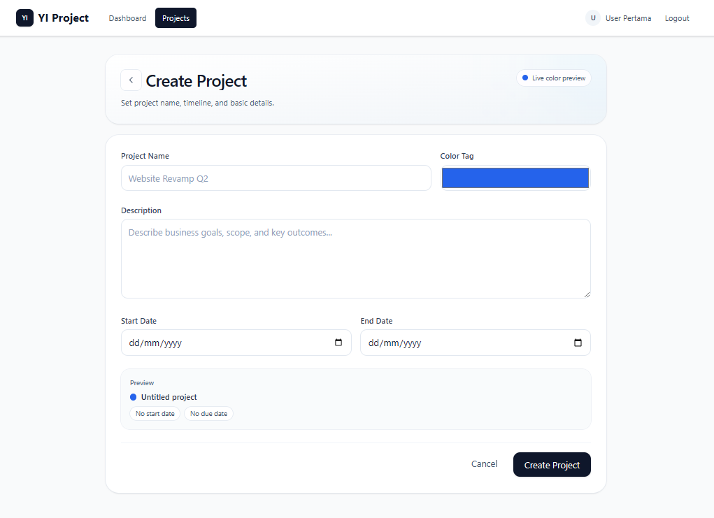
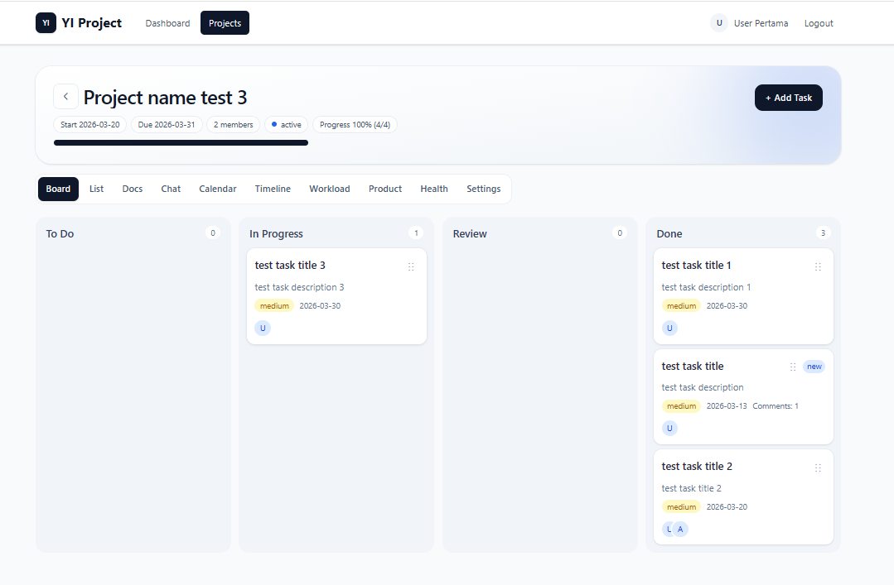
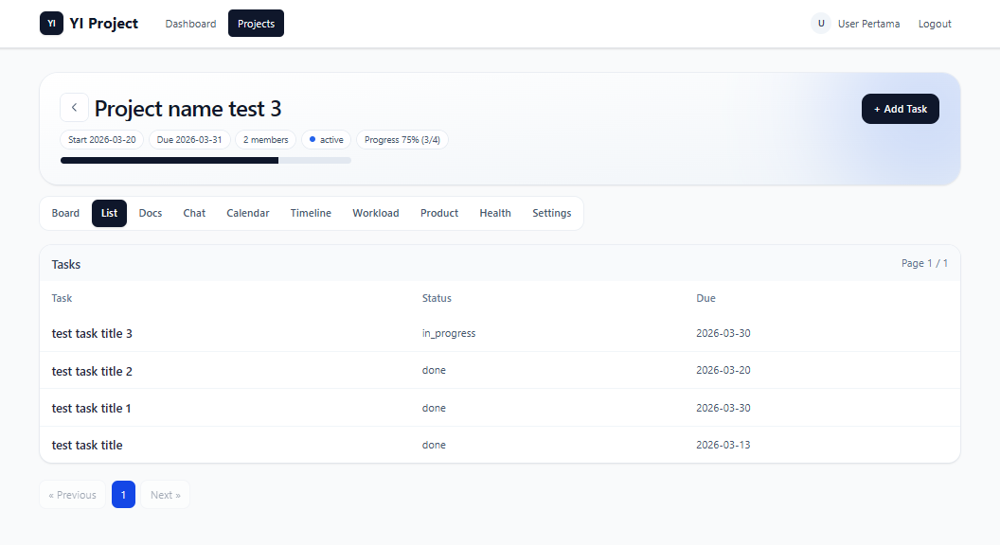
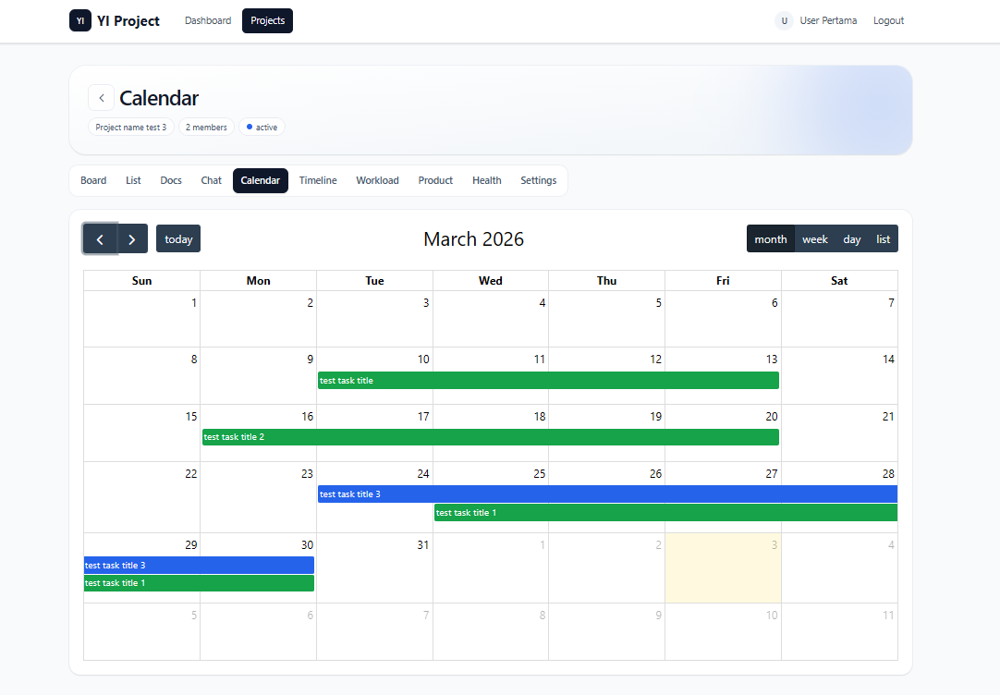
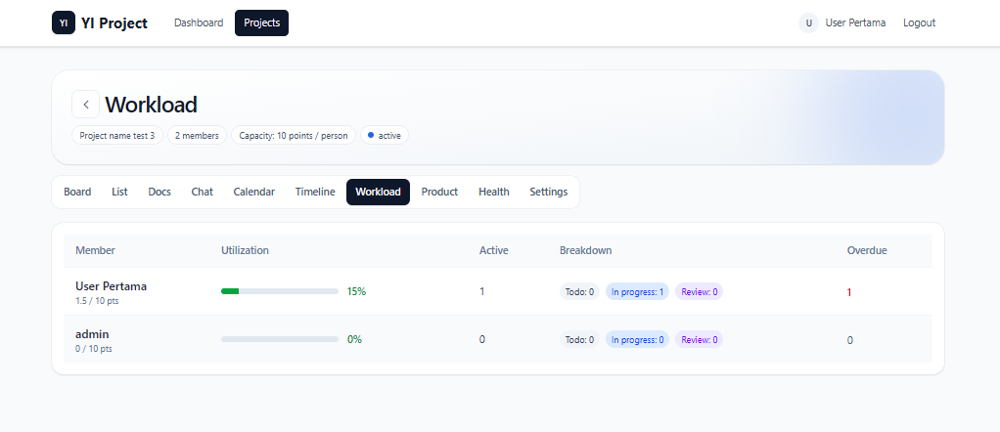

Laravel + React + Inertia.js
Project Management App
Aplikasi manajemen proyek modern berbasis Laravel dan React untuk kolaborasi tim, manajemen task, sprint monitoring, dan pemantauan progres secara real-time.
Laravel
React
Inertia.js
Task Management
Sprint Monitoring
Fitur Utama
Dashboard & Monitoring
- Project health dashboard dengan indikator risiko.
- Metric sprint: burndown chart dan velocity.
- Roadmap vs execution untuk pantau target tim.
Task Management
- Multiple assignees dan dependency antar task.
- Checklist, custom fields, dan time tracking.
- File attachment untuk kolaborasi tim.
Galeri Tampilan






Instalasi Aplikasi
Berikut langkah-langkah untuk menginstal aplikasi ini dari GitHub:
-
Klon repositori
git clone https://github.com/alafgani1000/project-app.git cd project-app -
Instal Dependensi PHP
composer install -
Instal Dependensi JavaScript
npm install # atau yarn install -
Konfigurasi Aplikasi
-
Salin file konfigurasi:
cp .env.example .env -
Generate App Key:
php artisan key:generate -
Konfigurasi database di
.env:DB_CONNECTION=mysql DB_HOST=127.0.0.1 DB_PORT=3306 DB_DATABASE=project_app DB_USERNAME=root DB_PASSWORD=
-
Salin file konfigurasi:
-
Pengaturan Database & Penyimpanan
php artisan migrate --seed php artisan storage:link -
Konfigurasi Email & Antrean (Queue)
MAIL_MAILER=smtp MAIL_HOST=sandbox.smtp.mailtrap.io MAIL_PORT=2525 MAIL_USERNAME=username_anda MAIL_PASSWORD=password_anda MAIL_ENCRYPTION=tls QUEUE_CONNECTION=database -
Menjalankan Aplikasi
# Terminal 1 (Backend) php artisan serve # Terminal 2 (Frontend) npm run dev # Opsional: Queue Worker / Production Build php artisan queue:work npm run build
Panduan Pengguna
- Buat project baru lalu tentukan timeline dan anggota tim.
- Tambahkan task, assignee, prioritas, dan dependency.
- Gunakan board serta kalender untuk memantau progres harian.
- Cek dashboard health untuk melihat risiko dan beban kerja tim.